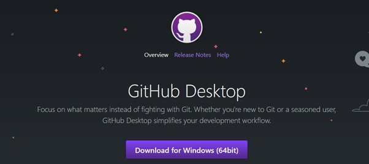
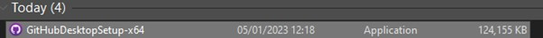
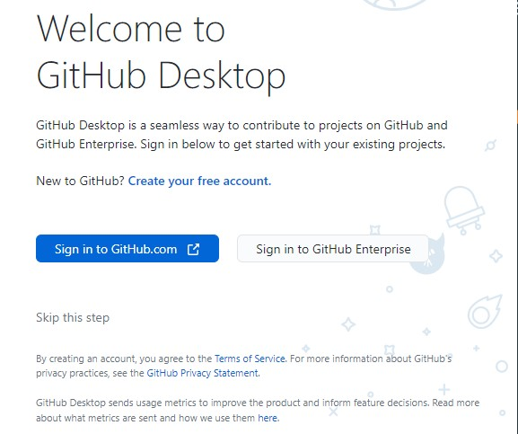
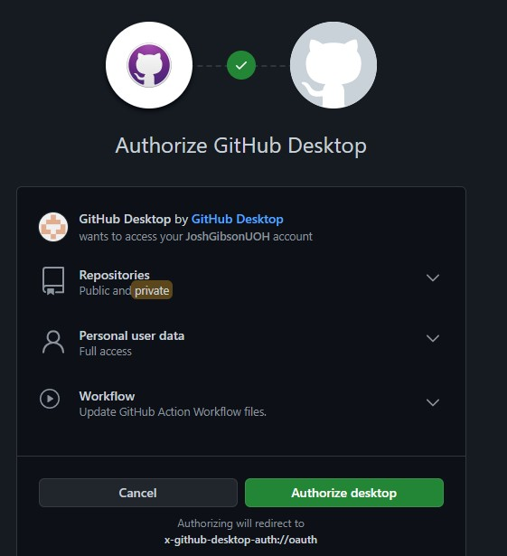
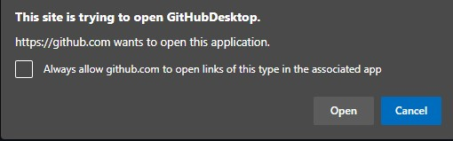
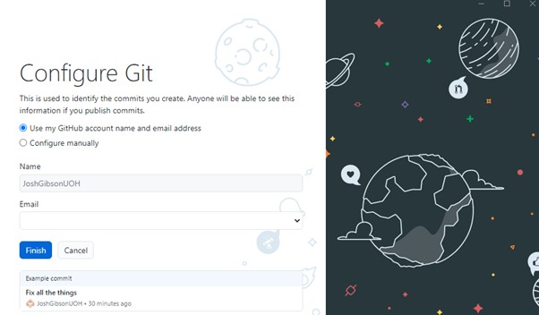

Now you have created a GitHub account it is time to start using it with your projects. We are going to do this using the GitHub desktop application. If you are working from the University GitHub Desktop should already be installed and ready to use, but if you are accessing it from the first time using your own device you will need to set it up.
If you already have GitHub desktop installed skip the first two steps of this tutorial and begin with step three.
Navigate to https://desktop.github.com/ and press the “Download for Windows” button displayed on the page.
Go to the location you downloaded the file to and run the executable file
When the program has finished installing GitHub desktop will automatically launch.
When prompted, click the button that says; “sign in to GitHub.com” and sign into your recently created University GitHub account.
Depending on how your PC is setup, and if you are currently logged into GitHub different things may happen, including:
When logged in you may find that you have been greeted with a window like the one below:
Click the big green “Authorize Desktop” button to allow GitHub desktop to link to your account.
You may be presented with a security prompt, this is completely normal, and you are free to press open.
When this is completed the GitHub desktop app will automatically refresh and will open a new window asking you to configure Git either by using your GitHub account name and e-mail address or by configuring it manually. Leave this at the default setting and after ensuring the account you are logging into is the correct one press the finish button.
You will then be redirected to the GitHub desktop application and are free to begin creating repositories.
Traditionally, a lot of work with GitHub is done using the command line – and this is still the case in a lot of organizations. Throughout this tutorial we are going to be using GitHub desktop due to its more first-time user-friendly GUI focused experience.
Despite this we realize that knowing the command line versions of each of these commands could be beneficiary, so a separate document has been created covering how to do a lot of the skills covered within these labs using the command line. That document can be found here: